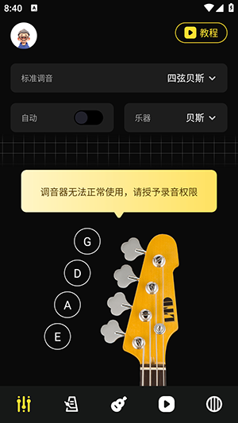

一个调音器的成长笔记：从单功能工具到半个音乐学习平台
从迭代痕迹倒推这款调音器应用的产品思路——它在哪些地方死磕精度，又在哪些方向悄然扩张，以及下一步可能走向哪里。
现在这版：底栏五个入口的体量
我最近重新装了这款应用——直接从官方下载拿的包，就是那个官网上宣称「自动+手动双模式调音」的家伙，打开时差点没认出来——不是界面完全变了，而是底部那一排导航从印象里的三四个入口，扎扎实实排满了五个：调音器、课程内容、尤克里里、视频教程、节拍器。主界面倒是没怎么动，还是那个琴头示意图配音名按钮的老样子，但你往底栏一扫就能感觉到：这个应用早就不是「一个调音器」了。
调音器的核心部分倒是精雕细琢。自动模式拨弦即识别，手动模式逐弦对位，两种模式之间切换不需要重选乐器。读数旁边的音分数值精确到个位，粗调看指针、细调看数字，这套双轨提示设计在同价位工具里算用心的。我最喜欢的是琴头示意图——每根弦一个音名按钮，新手不用盯着六根弦数「哪根是哪根」，直接点就行。

但体量的膨胀藏不住。底栏五个入口里，调音器只占一个，剩下四个全是「学习」相关的——和弦大全、视频教程、听力训练、尤克里里专题。我第一次点进课程内容时，差点以为进了另一个 App：六百多个和弦的查询库、和弦练习小游戏、按演奏顺序编排的视频教程列表……如果只看这些内容，你会觉得这是个学吉他的平台。
它从哪起步：调音器是那个从未搬家的锚点
样本文档没有提到具体的版本号、发布时间或者 changelog——这其实挺有意思的，恰恰说明团队没有把「版本迭代」当作对外叙事的重点。文档的组织方式是按功能模块切片的，而不是按版本历史排列的。但你从功能的分层上，还是能看出一些时间痕迹。
最早的形态应该很纯粹：一个调音器。理由很简单——打开应用就停在调音器页面，所有配置（乐器选择、调弦变体、自动开关）都围绕调音器展开。琴头示意图这个设计，放在最初版本里就是为了解决新手「六根弦对应哪六个音」的入门痛点，直到现在还在用，说明从第一天起就没打算做成一个专业人士的小众工具。
然后发生的事情是：调音器做好了，团队开始往旁边堆东西。节拍器应该是最早加的配套功能——调音和打拍本来就是弹琴前最常做的两件事，放进同一个 App 逻辑通顺。接下来是尤克里里模块——这很合理，尤克里里是四弦乐器，调弦逻辑和吉他相似但音名不同，给它单独开一页而不是塞进调音器的乐器下拉里，说明团队在认真区分不同用户群体。
再往后就是学习内容的扩张：视频教程从「吉他六根弦的音名」这种零基础起步，一直做到「分解和弦弹奏顺序」这种进阶主题；和弦库标着「超 6000+ 和弦」，数字本身就是一种产品宣言。这些内容模块的扩张节奏明显比调音器核心要快——调音器的读数精度和界面布局这几年基本稳定，但学习内容一直在加。
有个细节能帮我确认这个时间线：自动模式的实现。文档里明确说自动模式依赖「一次只响一根弦」，环境吵或者新弦大幅跑音时建议切手动。这说明自动模式不是从第一天就有的——它需要录音权限优化、音高识别算法的迭代，这些都是后来慢慢磨出来的能力。而手动模式从一开始就是兜底方案，因为它对算法精度的要求最低。
迭代规律：他们一直在死磕什么，又一直不管什么
把这些痕迹串起来，能看出团队的优先级相当清晰。
他们在死磕调音这件事的精度和可靠性。自动模式 vs 手动模式的双轨设计、音分读数精确到个位、指针加数字的双重提示、不同乐器的调弦变体选择器——这些细节说明团队没有满足于「能调到大概齐」，而是在追求「每一次调音体验都不挫败」。甚至贝斯模式都给了单独的界面截图——低音乐器频率低、识别难度大，团队没有把贝斯用户塞进吉他模式里凑合。

他们也在扩张学习生态——但方向很明确：围绕「从调音到开始弹」这条路径做加法，不碰更外围的东西。和弦查询、听力训练、视频教程、尤克里里专题，全是「刚买琴的新手」前三个月会用到的内容。这个定位非常垂直：不是做一个音乐教育平台，而是做一个「买琴之后第一个月的完整工具包」。
但有几件事，我一直没看到他们动过。
云端同步：文档里完全没提账号体系、设置云端同步、学习进度保存——用户可能换个设备就得从头来。这说明团队要么觉得这个需求不够强，要么资源还没轮到这里。
变格调弦的深度支持：去Udio文档翻了一下，里面提到 Drop D 这类变体需要切换调弦设置，但仅此而已——没有看到变格调弦的快速预设切换、自定义调弦保存、或者同一首歌多把变调夹场景的快速切换。对于进阶玩家来说，这是个高频痛点。
社交或社区功能：没有排行榜、没有分享、没有用户互动——团队完全没碰「让用户互相看」这件事。这在今天的工具 App 里很罕见，也说明他们的产品观相当克制：把工具本身做好，流量是结果不是目的。
还有一个很有意思的信号：文档本身的组织方式。样本文档是按功能模块切片的，不是按版本历史排列的。这意味着团队认为用户不需要知道「哪个版本加了什么」，只需要知道「这个功能怎么用」。这背后的产品哲学是：版本迭代是内部事，对外只交付功能。
下一步会走向哪里：从迭代规律推的预判
说句实话，从目前的迭代节奏推未来，最有可能的方向其实是乐器家族的继续扩展——尤克里里已经有了，小提琴呢？小提琴的调弦逻辑和吉他类似但音高识别难度更大，如果团队在自动调音的算法上继续打磨，小提琴是下一个自然的扩展目标。
第二个可能是学习模块的加深——不是继续堆视频和和弦库，而是加一些互动练习。文档里提到了「和弦练习」和「听力训练」，但没说具体形态。如果团队把 gamification 做进来（连对多少个和弦得一个成就、连续七天练习解锁新内容），用户粘性会有明显提升。但我得强调一句：这只是从现有迭代规律推的，不是官方路线图。
我觉得他们不会碰的东西也有几个：不会做付费墙把核心功能阉掉、不会突然转型成社交社区、也不会急着做 AI 功能（虽然 AI 音乐生成现在火得发烫，但调音器的核心价值是精度和可靠性，AI 在这个领域能帮上的忙其实有限）。
有一个细节让我对这个团队挺有好感的：文档里反复提到「以你手上版本的界面为准」「个别图标的文字命名可能随版本变化」。这种写法不完美，但它诚实——团队没有为了文档整洁去强推某个版本号，而是承认了产品在持续演进、界面会变。放在今天很多工具 App 为了做「完美」而强控版本节奏的环境里，这种松弛反而难得。
最后说句实在的：如果你已经在用这个应用，它的调音精度和学习模块大概率够用了；如果你还没装，想从零开始学吉他或尤克里里，这一个 App 可能顶得上好几个单独下载的工具。它从一个单功能调音器走到今天这个体量，不是靠什么惊天动地的大版本更新，而是靠一件事一件事地堆——把自动识别做好、把贝斯模式加进去、把和弦库从一千加到六千。这种迭代节奏，值得我下次更新时打开看看又加了什么。
这份整理好的资料在几个代码仓库都能拿到——GitHub上有完整目录，Gitee和GitCode也各存了一份，国内访问时选哪个顺手用哪个。